Как приготовить горячий шоколад дома .

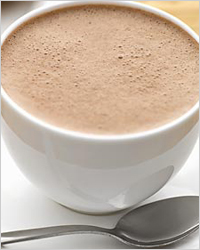
А знаете ли вы, что если бы не предприимчивость англичан, то весь мир никогда не узнал бы, что такое плиточный шоколад и продолжал бы наслаждаться волшебным напитком в его почти первозданном виде? В 1846 г. Джозеф Фрай отлил первую в мире шоколадную плитку, и это было началом заката божественного напитка. И сегодня мало кто может похвастаться тем, что пробовал горячий шоколад. Напиток из пакетиков не в счёт! Речь о настоящем напитке богов.Он на самом деле считался таковым – ольмеки, майя и ацтеки готовили странный по понятиям современного человека священный напиток, пить который могли лишь избранные. Готовили его так: какао-бобы пережаривали, растирали и смешивали с холодной водой, добавляя острый перец чили. Получалась поистине атомная смесь, напиток не для каждого! Шоколад в его привычном виде стал популярным после того, как европейцы «слегка» усовершенствовали рецептуру: острый перец заменили на сахар, а сам напиток стали разогревать для лучшей растворимости ингредиентов. Причём вплоть до XIX века горячий шоколад был не только лакомством, но и лекарством.
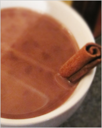
Впрочем, хватит истории, ведь мы на кулинарном сайте, а значит, нас интересуют рецепты и тонкости приготовления этого божественного напитка. Только позвольте напомнить Вам о несомненной пользе шоколада (в любом его проявлении). Шоколад содержит множество самых разных биологически активных веществ: витамины А, В1, D, С и Е, антиоксиданты, флавоноиды, соли калия и кальция. Горячий шоколад улучшает настроение, повышает жизненный тонус, увеличивает работоспособность, стимулирует умственную деятельность, улучшает память, помогает справляться с депрессией и даже может быть средством профилактики заболеваний сердечно-сосудистой системы. В отличие от плиточного шоколада, горячий шоколад содержит меньше сахара – хорошая новость для стройнеющих!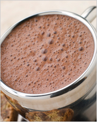
А теперь тонкости и хитрости. Самый важный продукт, из которого Вы будете готовить согревающий душу и сердце напиток, это шоколад. Можно пойти по пути следования традициям и попробовать приготовить настоящий горячий шоколад из растёртых какао-бобов, как древние майя, но гораздо быстрее и проще сделать это из обычного плиточного шоколада. Шоколад нужно выбирать только наилучшего качества, без наполнителей и всевозможных добавок вроде красителей, консервантов, ГМО и прочей химии. Вы можете использовать обычный плиточный тёмный или молочный шоколад, специальный кулинарный шоколад или какао-порошок. В любом случае, этот ингредиент должен быть наилучшего качества, ведь именно он придаёт вкус и аромат Вашему напитку.Жидкую основу горячего шоколада могут составлять сливки, молоко или вода. Шоколад на воде более лёгкий, но на вкус пресноватый, поэтому его нужно хорошенько приправлять. Горячий шоколад на молоке или сливках более приятный на вкус, но и калорий в нём намного больше. Смесь воды и молока оптимальна: шоколад в такой смеси лучше растворяется и получается более лёгким и деликатным.
В горячий шоколад можно добавить почти всё, что угодно. Яичный желток, сметана или крахмал придают напитку густоту и
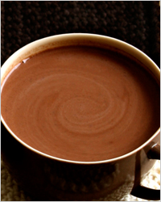
делают его более сытным. Алкоголь и специи насыщают горячий шоколад неповторимым вкусом. С шоколадом хорошо сочетаются коньяк, ром, ликёр, корица, ваниль, имбирь, кардамон, перец чили, фрукты, сухофрукты, мороженое. Каждый из этих продуктов делает Ваш напиток уникальным.Способ приготовления горячего шоколада можно описать в двух словах: «расплавить и размешать». Плавить шоколад нужно очень осторожно и аккуратно, не допуская его кипения. Самым безопасным способом считается водяная баня. Для этого в кастрюлю с кипящей водой ставится кастрюлька или жаропрочная миска с кусочками шоколада, и всё сооружение водружается на плиту. Огонь – самый маленький. Шоколад следует размешивать деревянной или силиконовой лопаточкой до полного его расплавления. Строго следите за тем, чтобы в шоколад не попала вода – он просто свернётся. Ни в коем случае не перегревайте шоколад! Если Вы решили приготовить горячий шоколад с яичным желтком, то следите за тем, чтобы смесь не вскипела, иначе все Ваши труды пойдут прахом. Вливайте желток тонкой струйкой, постоянно помешивая, в тёплый шоколад.
В общем, ничего сложного и сверхъестественного. Выбирайте рецепт по вкусу и попробуйте приготовить напиток богов. В зимнюю стужу насыщенный ароматный горячий шоколад согреет Вас и наполнит сердце радостью.
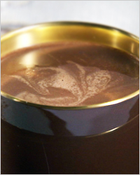
Самый простой горячий шоколадИнгредиенты на 2 порции:
200 г тёмного шоколада,
50 мл молока.
Приготовление:
Разломите плитки шоколада на кусочки. Нагрейте молоко до 50°С. Поставьте
кастрюльку с молоком на водяную баню и понемногу всыпайте шоколад.
Постоянно размешивайте шоколад до тех пор, пока он не растает. Хорошо
прогрейте, но не кипятите! Разлейте по керамическим чашечкам и подавайте
со стаканчиком холодной воды, так как вкус у этого напитка получается
очень насыщенным.
Горячий шоколад «Ароматный»
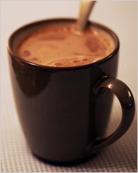
Ингредиенты на 6 порций:
250 г молочного шоколада,
700 мл молока,
300 мл 20% сливок.
Приготовление:
Сливки и молоко влейте в кастрюльку, поставьте на средний огонь и
доведите до кипения, но не кипятите. Снимите с огня, добавьте мелко
нарубленный шоколад и хорошенько размешайте венчиком до полного его
растворения. Разлейте по толстостенным чашкам и подайте.
Добавьте в горячий шоколад специи или фрукты и удивляйте новым вкусом!
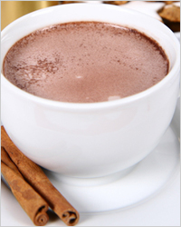
Горячий шоколад с корицейИнгредиенты на 6 порций:
200 г горького шоколада,
700 мл молока,
300 мл 20% сливок,
2 палочки корицы.
Приготовление:
Соедините молоко и сливки и доведите до кипения, но не кипятите. Палочки
корицы крупно растолките в ступке и положите её в молоко. Дайте
настояться минут 5, процедите, добавьте наломанный шоколад и тщательно
размешайте венчиком.
Банановый горячий шоколад
Ингредиенты на 4 порции:
100 г шоколада,
900 мл молока,
2 банана,
щепотка корицы.
Приготовление:
Бананы очистите и нарежьте на кусочки, шоколад разломите. В кастрюлю влейте молоко, положите бананы и шоколад и
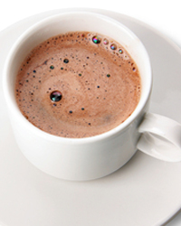
поставьте на медленный огонь. Постоянно помешивая, доведите почти до кипения. Как только шоколад расплавится, снимите с огня. Блендером взбейте полученную смесь до появления пены. Разлейте по стаканам и посыпьте корицей. `Горячий шоколад с перцем чили
Ингредиенты на 2 порции:
100 г горького шоколада,
60 мл 22% сливок,
цедра ? апельсина,
сахар, молотый перец чили – по вкусу.
Приготовление:
Растопите шоколад со сливками на водяной бане. Добавьте цедру,
перемешайте, всыпьте сахар и молотый перец. Если Вы готовите шоколад с
перцем впервые, то будьте аккуратнее с перцем, 1-2 щепоток для начала
будет достаточно.
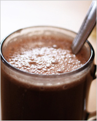
Горячий шоколад с кокосовым молокомИнгредиенты на 2 порции:
100 г молочного шоколада,
200 мл молока,
200 мл кокосового молока,
2 ст.л. сахара.
Приготовление:
Соедините оба вида молока и доведите до кипения. Добавьте сахар, снимите
с огня и положите в молочную смесь наломанный шоколад. Венчиком
размешайте до расплавления шоколада и разлейте по кружкам.
Шоколад и кофе – неразлучная пара. Они прекрасно дополняют друг друга.
Кофе латте с шоколадом
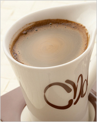
Ингредиенты на 4 порции:
120 г горького шоколада,
250 мл кофе эспрессо,
700 мл молока,
3 ст.л. ванильного сахара.
Приготовление:
Вскипятите молоко и снимите с огня. 500 мл молока соедините с кофе,
добавьте 1 ст.л. ванильного сахара. В оставшееся молоко добавьте 2 ст.л.
ванильного сахара и доведите смесь до кипения. Снимите с огня, добавьте
разломанный на кусочки шоколад и размешайте до полного растворения.
Соедините шоколадное молоко и кофейно-молочную смесь и взбейте
блендером.
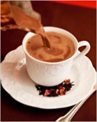
Бразильский горячий шоколадИнгредиенты на 2 порции:
125 г горького шоколада,
500 мл молока,
100 г сахара,
60 мл крепкого кофе,
250 мл воды.
Приготовление:
Вскипятите воду, снимите с огня, опустите в неё шоколад, разломанный на
кусочки, и мешайте до полного растворения шоколада. Молоко нагрейте до
кипения и смешайте с расплавленным шоколадом. Добавьте сахар и очень
крепкий горячий кофе, поставьте на медленный огонь, а лучше на водяную
баню, и размешивайте до тех пор, пока весь сахар не растворится.
Горячий шоколадно-кофейный напиток с кардамоном
Ингредиенты на 2 порции:
50 г горького шоколада,
70 мл крепкого кофе,
? стак. молока,
1 банан,
1 ч.л. сахара,
3 коробочки кардамона,
щепотка мускатного ореха.
Приготовление:
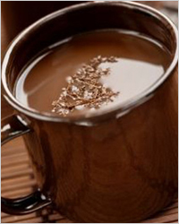
В горячем молоке растопите шоколад, добавьте сахар. Нарежьте очищенный банан на кусочки, положите в блендер, добавьте шоколадное молоко, зёрна кардамона и щепотку молотого мускатного ореха. Взбейте, разлейте по стаканам и посыпьте тёртым шоколадом.
Споры о том, чем же считать горячий шоколад – напитком или десертом – не утихнут, наверное, никогда. Чтобы горячий шоколад стал десертом, который можно есть ложечкой, кулинары используют крахмал, сметану и жирные сливки.
Густой горячий шоколад
Ингредиенты на 6 порций:
200 г плиточного шоколада,
1 л молока,
1-2 ст.л. сахара,
2-3 ст.л. без верха крахмала.
Приготовление:
Разведите крахмал в 1 стакане молока. Оставшееся молоко вылейте в
кастрюлю, поставьте на средний огонь, добавьте сахар и наломанный
шоколад. Прогрейте, постоянно помешивая, до тех пор, пока шоколад не
расплавится. Затем влейте молоко с крахмалом, хорошо перемешайте и
прогревайте до тех пор, пока масса не начнёт густеть.
Г
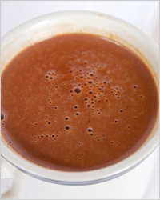
орячий шоколад со сметанойИнгредиенты на 2 порции:
1,5 ст.л. какао-порошка,
1 стак. сметаны,
2 ст.л. сахара.
Приготовление:
Сметану смешайте с какао-порошком и сахаром до получения однородной
массы, поставьте на огонь и доведите до кипения, постоянно помешивая. Не
перегрейте – как только появятся пузыри, тотчас же снимайте с огня.
Разлейте по толстостенным чашкам.
Креольский горячий шоколад
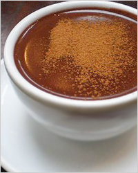
Ингредиенты на 6 порций:
4 ст.л. какао-порошка,
150 г молотого миндаля,
1 л молока,
1 ст.л. крахмала,
6 ст.л. сахара,
1 яйцо,
? ч.л. молотой корицы,
щепотка мускатного ореха.
Приготовление:
В небольшом количестве молока размешайте какао-порошок, сахар, крахмал и
сырое яйцо. Оставшееся молоко нагрейте до кипения и добавьте в него
шоколадную смесь. Варите, помешивая, на медленном огне, 2-3 минуты. В
готовый шоколад добавьте специи и молотый миндаль, перемешайте и
разлейте по чашкам.
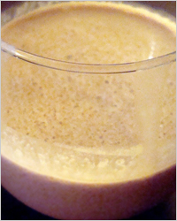
Горячий шоколад с какао-масломИнгредиенты:
200 г чёрного шоколада,
500 мл молока,
1 ст.л. сахара,
30 г какао-масла,
1,5 ст.л. без верха крахмала,
1 пакетик ванильного сахара.
Приготовление:
В стакане молока размешайте крахмал. Оставшееся молоко подогрейте в
небольшой кастрюльке, добавьте наломанный на кусочки шоколад, убавьте
огонь и мешайте до полного растворения шоколада. Тонкой струйкой влейте
молоко с крахмалом, постоянно размешивая, положите какао-масло и
ванильный сахар. Прогрейте полученную смесь, постоянно размешивая, до
загустения.
Добавление хорошего алкоголя пойдёт горячему шоколаду только на пользу. Правда, это будет уже совсем не детский напиток!
Горячий бренди-шоколад
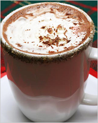
Ингредиенты на 2 порции:
200 г тёмного шоколада,
400 мл молока,
4 ст.л. бренди,
4 ст.л. сахара.
Приготовление:
Доведите молоко до кипения, убавьте огонь, положите в молоко разломанный
шоколад и размешивайте до растворения шоколада. Снимите с огня,
добавьте бренди и сахар, размешайте. Разлейте по толстостенным чашкам и
украсьте шоколадной стружкой.
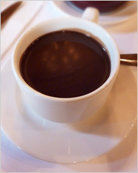
Горячий шоколад с ликёромИнгредиенты на 4 порции:
150 г горького шоколада,
2 ст.л. какао-порошка,
600 мл жирного молока,
4 ст.л. шоколадного ликёра,
4 ст.л. сахара.
Приготовление:
Вскипятите молоко, добавьте какао-порошок и кусочки шоколада.
Размешивайте до тех пор, пока шоколад не расплавится полностью. Добавьте
сахар и взбейте до появления пены венчиком или миксером. Налейте в
чашки по 1 ст.л. шоколадного ликёра, долейте горячим шоколадом, украсьте
тёртым шоколадом.
Ирландский горячий шоколад
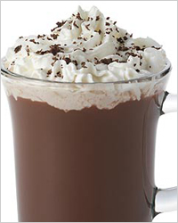
Ингредиенты на 4 порции:
100 г молочного шоколада,
2 ст.л. какао-порошка,
250 мл 30% сливок,
400 мл молока,
60 мл ирландского виски.
Приготовление:
Половину сливок взбейте до пышности. Молоко с шоколадом прогрейте,
помешивая, до расплавления шоколада. Добавьте в шоколадную смесь какао,
доведите почти до кипения. Снимите с огня, добавьте оставшиеся сливки и
виски. Перелейте в нагретые толстостенные бокалы, сверху уложите взбитые
сливки и посыпьте стружками шоколада.
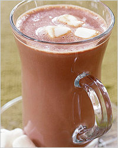
Горячий «Какао-чай»Ингредиенты на 6 порций:
50 г какао-порошка,
1 л молока,
180 г сахара,
6 яичных желтков,
100 мл рома,
400 мл чая.
Приготовление:
Размешайте какао-порошок в небольшом количестве молока, добавьте в
оставшееся молоко. Заварите крепкий чёрный чай. В отдельной посуде
взбейте сахар с желтками, затем медленно, постоянно помешивая, влейте
молоко с какао, поставьте на медленный огонь или водяную баню и
прогрейте до загустения. Влейте чай и ром, размешайте и подавайте
горячим.
С горячим шоколадом можно подать безе, зефир, взбитые сливки или лёгкое хрустящее печенье. В общем, речи о соблюдении диеты нет… Горячий шоколад – это наслаждение. Побалуйте себя!
Лариса Шуфтайкина
По материалам сайта : https://kedem.ru/